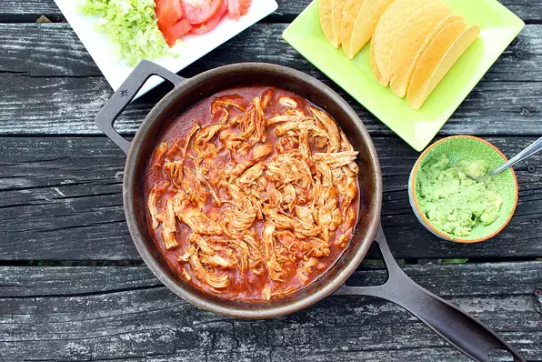

Easy Shredded Chicken Tacos

This is a great recipe for easy shredded chicken tacos that I've been using for years. Great for a weeknight or a weekend meal!
Ingredients
- 0.25 cup water
- 1 (1 ounce) packet taco seasoning mix
- 2 (8 ounce) cans tomato sauce
- 2 teaspoons white distilled vinegar
- 2 teaspoons minced garlic
- 2 teaspoons ground oregano
- 1 teaspoon ground cumin
Steps
- Mix water and taco seasoning in a large bowl. Add tomato sauce, vinegar, garlic, oregano, cumin, and sugar; mix well.
- Heat oil in a large skillet over medium-high heat. Add chicken and cook
- Remove chicken breasts from the pan and shred meat with 2 forks
- Transfer chicken and sauce to a serving bowl and spoon onto taco shells.
Cooks Note:
Soft flour or corn tortillas may be used in place of taco shells.
Nutrition Facts
Per Serving: 244 calories; protein 24g; carbohydrates 15.7g; fat 9g; cholesterol 58.5mg; sodium 658.8mg.